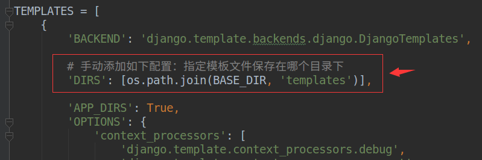

模板使用
1. 配置模板目录
如果命令行创建的项目，需要手动配置模板文件目录，如果是Pycharm创建的项目，则无需配置
- 在项目根目录下创建模板目录，比如叫
templates，后续开发模板文件会放在此目录下 在项目的配置文件
settings.py文件中，进行模板目录的配置，如下：
2. 定义模板文件
在templates目录中新建一个模板文件，如index.html
<!DOCTYPE html>
<html lang="en">
<head>
<meta charset="UTF-8">
<title>Title</title>
</head>
<body>
<!-- 显示模板变量 -->
<h1>{{ name }}</h1>
</body>
</html>
3. 模板渲染
方式一： 通过render函数
from django.shortcuts import render
def index(request):
context = {'name': 'django' }
# 参数1：请求对象
# 参数2：模块路径
# 参数3：字典数据
return render(request, 'index.html', context)
方式二： 通过Template对象的render方法
from django.template import loader
def index(request):
# 获取模板对象
template = loader.get_template('index.html') # type: Template
# 渲染得到字符串
html_str = template.render(context)
# 响应请求
return HttpResponse(html_str)